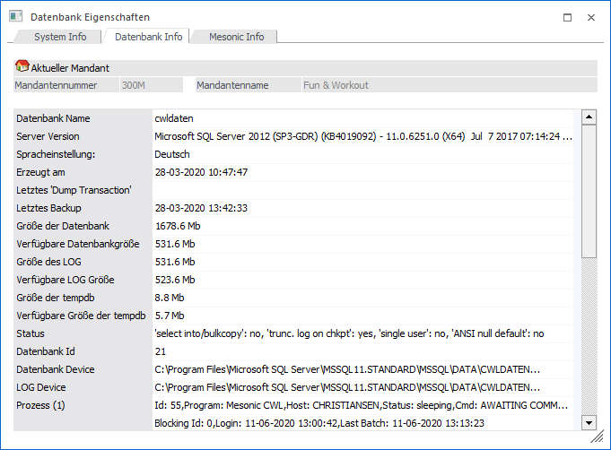

Durch Anklicken des Registers "Datenbank Info" im Fenster System Information erhält man nähere Informationen über die Soft- und Hardwareumgebung und beziehen sich immer auf den aktuellen Mandanten.
Hinweis
Diese Option kann im WinLine ADMIN nicht angewählt werden, da in diesem Programm nicht immer ein Datenstand bzw. ein Mandant im Zugriff steht.

Folgende Informationen sind u.a. ersichtlich:
Ø SQL-Server
Befinden sich die Daten am SQL-Server werden mehrere Informationen angezeigt, wobei die meisten davon selbsterklärend sind. Nachfolgend werden die Informationen beschrieben, die für das korrekte Arbeiten mit dem SQL-Server wichtig sind.
Ø Verfügbare Datenbankgröße
Je nach Größe des Datenstandes und nach der Menge der zu verarbeitenden Daten muss die verbleibende Größe der Datenbank adaptiert werden. Auf keinem Fall darf die verfügbare Datenbankgröße kleiner als 10 MB sein.
Ø Verfügbare LOG Größe
Das Log beinhaltet das Transaktionsprotokoll einer Datenbank - darin werden alle Vorgänge bzw. Operationen, die den Inhalt der Datenbank ändern, mitgeschrieben. Aus Gründen der Sicherheit sollte die verfügbare Größe der LOG-Datei mindestens 20 MB betragen.
Ø Verfügbare Größe der TempDB
In der Datenbank TempDB werden alle internen Tabellen angelegt, die der SQL Server zum Arbeiten braucht. Diese temporären Tabellen werden automatisch vom SQL Server wieder gelöscht. Temporäre Tabellen werden insbesonders dann angelegt und haben auch eine beachtliche Größe, wenn komplexere Auswertungen durchgeführt werden sollen. Die TempDB sollte an die verarbeitende Datenmenge angepasst werden, muss aber mindestens 25 MB betragen.